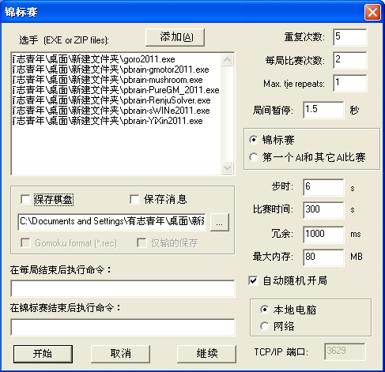

2011无禁软件PK，新秀国产软件YiXin2011勇夺冠军
#1 2011无禁软件PK，新秀国产软件YiXin2011勇夺冠军 作者：有志青年 发表时间：2012-2-2 10:33:57
| - | YiXin2011 | gmotor2011 | PureGM_2011 | goro2011 | mushroom | RenjuSolver | sWINe2011 |
|---|---|---|---|---|---|---|---|
| YiXin2011 | - | 2 : 8 | 0 : 10 | 1 : 9 | 0 : 10 | 0 : 10 | 0 : 10 |
| gmotor2011 | 8 : 2 | - | 2 : 8 | 3 : 7 | 0 : 10 | 0 : 10 | 0 : 10 |
| PureGM_2011 | 10 : 0 | 8 : 2 | - | 1 : 9 | 0 : 10 | 0 : 10 | 0 : 10 |
| goro2011 | 9 : 1 | 7 : 3 | 9 : 1 | - | 5 : 5 | 1 : 9 | 0 : 10 |
| mushroom | 10 : 0 | 10 : 0 | 10 : 0 | 5 : 5 | - | 0 : 10 | 0 : 10 |
| RenjuSolver | 10 : 0 | 10 : 0 | 10 : 0 | 9 : 1 | 10 : 0 | - | 5 : 5 |
| sWINe2011 | 10 : 0 | 10 : 0 | 10 : 0 | 10 : 0 | 10 : 0 | 5 : 5 | - |
| Total | 57 : 3 | 47 : 13 | 41 : 19 | 29 : 31 | 25 : 35 | 6 : 54 | 5 : 55 |
| Ratio | 19.000 | 3.615 | 2.158 | 0.935 | 0.714 | 0.111 | 0.091 |
| Points | 18 | 15 | 12 | 7 | 7 | 1 | 1 |
2012-2-2 8:53 - 10:20
特别说明：以上都是无禁手规则，任意开局。
方法：
下载花园五子棋：参见ShowPost.asp?ThreadID=1504
下载你想让他们pk的引擎：地址：http://gomocup.wz.cz/gomoku/download.php#ais
将你的这些引擎解压缩到一个文件夹中。
运行花园五子棋，选择游戏菜单中的锦标赛，如下图载入这些引擎

PK开始
耐心等待吧。
补充一句，四哥的终结者，可能有效bug，总是报错
pbrain-RenjuSolver.exe did not answer OK to the START command
另，goro2011应该是黑石2011吧
#2 Re:2011无禁软件PK，新秀国产软件YiXin2011勇夺冠军 作者：有志青年 发表时间：2012-2-2 10:35:21
-------------------------------------
2012-2-2 8:53 - 10:20
Time for turn: 6 s, Time for match: 300 s
Tolerance: 1 s, Memory: 80 MB, Opening: 8
Games played: 210
-------------------------------------
YiXin2011
wins: 57=17+13+27, losses: 3=0+3
time/turn: 1480 ms (max: 6.0 s), time/game: 12 s
moves/game: 8, CRC: 3911fdbd, memory: 43.41 MB
gmotor2011
wins: 47=12+9+26, losses: 13=5+8
time/turn: 2608 ms (max: 8.7 s), time/game: 22 s
moves/game: 8, CRC: 56498af1, memory: 32.85 MB
PureGM_2011
wins: 41=6+6+29, losses: 19=9+10
time/turn: 2776 ms (max: 5.5 s), time/game: 20 s
moves/game: 7, CRC: a27205fd, memory: 1.52 MB
goro2011
wins: 29=8+2+19, losses: 31=0+3+28, 28 errors
time/turn: 1874 ms (max: 5.6 s), time/game: 10 s
moves/game: 5, CRC: db5f39b3, memory: 8.38 MB
mushroom
wins: 25=0+0+25, losses: 35=16+19
time/turn: 478 ms (max: 1.1 s), time/game: 2 s
moves/game: 4, CRC: 2c542fb8, memory: 49.27 MB
RenjuSolver
wins: 6=0+0+6, losses: 54=0+0+54, 54 errors
time/turn: 0 ms (max: 0.0 s), time/game: 0 s
moves/game: 1, CRC: 38d6e265
sWINe2011
wins: 5=0+0+5, losses: 55=0+0+55, 55 errors
time/turn: 0 ms (max: 0.0 s), time/game: 0 s
moves/game: 1, CRC: a8051781
#3 Re:2011无禁软件PK，新秀国产软件YiXin2011勇夺冠军 作者：黄药师 发表时间：2012-2-2 10:40:14
0:10这里是指赢的？#4 Re:2011无禁软件PK，新秀国产软件YiXin2011勇夺冠军 作者：有志青年 发表时间：2012-2-2 10:42:29
上表竖着看哟
#5 Re:2011无禁软件PK，新秀国产软件YiXin2011勇夺冠军 作者：梧桐风 发表时间：2012-2-2 11:29:38
四哥的终结者挂了啊#6 Re:2011无禁软件PK，新秀国产软件YiXin2011勇夺冠军 作者：掌棋宣传员 发表时间：2012-2-2 11:33:47
求YiXin2011
［此帖子已被 掌棋宣传员 在 2012-2-2 11:38:02 编辑过］
#7 Re:Re:2011无禁软件PK，新秀国产软件YiXin2011勇夺冠军 作者：梧桐风 发表时间：2012-2-2 11:45:05
引用：ShowPost.asp?ThreadID=17104
原文由 掌棋宣传员 发表于 2012-2-2 11:33:47 :求YiXin2011
［此帖子已被 掌棋宣传员 在 2012-2-2 11:38:02 编辑过］
［ 掌棋宣传员 于 2012-2-2 13:10:46 时花20金币送鲜花一朵］
［ 掌棋宣传员 于 2012-2-2 13:10:48 时花20金币送鲜花一朵］
［ 掌棋宣传员 于 2012-2-2 13:10:50 时花20金币送鲜花一朵］
［ 掌棋宣传员 于 2012-2-2 13:10:53 时花20金币送鲜花一朵］
［ 掌棋宣传员 于 2012-2-2 13:10:56 时花20金币送鲜花一朵］
#8 Re:2011无禁软件PK，新秀国产软件YiXin2011勇夺冠军 作者：潇洒 发表时间：2012-2-2 13:29:40
2010 Tito 怎么没参赛？#9 Re:2011无禁软件PK，新秀国产软件YiXin2011勇夺冠军 作者：有志青年 发表时间：2012-2-2 14:00:04
呵呵，那是2010年的撒
tito还是厉害
#10 Re:2011无禁软件PK，新秀国产软件YiXin2011勇夺冠军 作者：飞翔 发表时间：2012-2-2 23:03:47
有禁的哪个强
#11 Re:2011无禁软件PK，新秀国产软件YiXin2011勇夺冠军 作者：白河愁 发表时间：2012-2-5 12:51:22
不是这样的……
Yixin是在League.4和League.3拿了第一，相当于丙级和丁级联赛。。
到L2(乙级)就被终结者砍了，没进甲级。
［ 极地剑客 于 2012-2-28 10:51:25 时花20金币送鲜花一朵］
#12 Re:2011无禁软件PK，新秀国产软件YiXin2011勇夺冠军 作者：纳米 发表时间：2012-2-27 13:16:59
fiver6呢？#13 Re:2011无禁软件PK，新秀国产软件YiXin2011勇夺冠军 作者：nara 发表时间：2012-3-2 19:07:30
赶紧下个试试，看看怎么样？